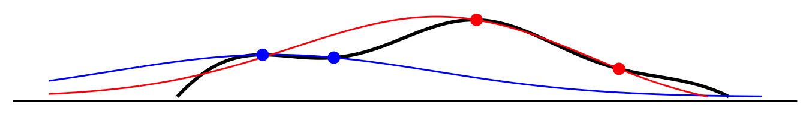
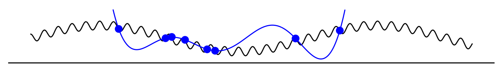

Thanks to comments from many, especially Grady Ward.
Thanks to comments from many, especially Grady Ward.

If we train an AI to imitate humans, will it ever beat humans? Large language models (LLMs) are trained to predict what humans would say in a given situation (with some qualifications, see below). It would seem to follow that they would never be better at answering questions than a human.1
1 Many other ML models use human-generated labels as the ground truth: image recognition, language understanding, text classification, medical diagnosis.
In a formal model, imitative AI can beat humans for three reasons:
- Averaging out error. Different humans give different answers to a question, and so if an LLM can consistently give the average answer it will do better than the average human (the error of the average being always smaller than the average error).
- Specialization. People tend to write about what they know, and so an LLM which learns to predict the typical answer to a given question will sound like a specialist in all areas: it will answer questions about water like a hydrologist and questions about bugs like an entomologist (although it will also answer questions about astrology like astrologists).
- Interpolation. An LLM will interpolate responses from different humans, and this interpolation can be functionally equivalent to inference, meaning an LLM will sometimes be able to reliably answer questions that no human can answer.
Additionally AI can learn and use tacit human knowledge. The majority of human knowledge is tacit, meaning it is used in forming judgments but we do not have conscious access to that knowledge. If AI models can accurately predict human judgments then the weights in those models effectively contain that tacit knowledge, and so the model can be re-engineered to use that knowledge in ways that humans cannot. I will discuss tacit knowledge more in a followup post.
This blog post contains: (1) a simple visual illustration of the argument; (2) a formal model and derivation of the claims above; (3) discussion of evidence that LLMs are able to perform super-human tasks; (4) discussion of applications, related literature, and complications. This is work in progress and I’m planning to keep adding material to this post.
Setup: Questions and Answers
For concreteness I will describe humans and computers answering questions about the world. However I think the basic framework applies generally to performing tasks or following instructions. Some examples of questions and answers:
| question | answer |
|---|---|
| What’s the capital of Switzerland? | Geneva |
| What’s the best response if white plays c4? | c5 |
| Does this picture contain a cow? üêÑ | Yes |
| How much more likely are you to buy a Coke after hearing the slogan “Coke refreshes”? | 0.1% |
Graphical Argument
(1) Let this curve represent the world. Each question about the world is a point on the x-axis, and the answer to each question is represented by the curve.
(2) A human forms beliefs about the world (red curve). The human asks two questions and gets two answers (red dots) and from these they form estimates of the answer to every other question (red line).
(3) A computer learns to predict the human’s answers (green curve). The human records some questions and their answers (green dots), and the computer learns to predict the human’s answers (green curve). Here I have drawn the best case, where the fit is perfect, but we would never expect the computer to do better than the human.

(4) Add another human (blue curve). Suppose we have an additional human who asks some different questions (blue dots) and so forms different beliefs. Each human’s beliefs are are accurate in the neighborhood of their experience.

(5) Let the computer predict answers from both humans (green curve). Now both humans record their experiences and the computer tries to predict human answers (green curve). Here we can see:
- Specialization. The computer’s predictions can match the humans’ responses in each of their domains of expertise
- Interpolation. The computer is better than both humans in the intermediate region, i.e. the computer effectively combines information from both humans.

(6) Let the human have tacit knowledge. Suppose the human always knows correct the answer when they see the question (red), but their conscious understanding of the relationship (pink) is imperfect. When asked which question would get the highest answer, i.e. what is the maximum of this function, then they will choose the maximum of the pink curve. However the computer could learn the red curve and algorithmically find the maximum, substantially outperforming the human.
In fact I think this is an accurate description of image synthesis by neural nets: models are first trained to recognize images given captions, and then a new image can be synthesized to match a given caption, e.g. through a diffusion algorithm. Here there’s a striking asymmetry: these algorithms can approximately match average human performance in recognition, but they far outperform human performance in construction of new artefacts.
Evidence on Superhuman Performance
Performance over time.
Language and image recognition abilities.
However the paper that collected this data (Kiela et al.) argues that performance on benchmarks significantly exaggerates true performance: “Models that achieve super-human performance on benchmark tasks (according to the narrow criteria used to define human performance) nonetheless fail on simple challenge examples and falter in real-world scenarios.”
Performance on coding, math & knowledge tests.


Miscellaneous.
Papers on persuasion. A number of papers compare the persuasive power of LLM-generated text to human-generated text (Bai et al. (2023), Goldstein et al. (2023), Hackenburg and Margetts (2023), Matz et al. (2023), Palmer and Spirling (2023), Qin et al. (2023)). They all find that LLM does relatively well, but none show clear signs of computer superiority.
Koivisto and Grassini (2023): they compared GPT4 to online recruited humans (£2 for 13 minute task) in giving “creative” uses for everyday items. The prompt was to “come up with original and creative uses for an object”, objects were “rope”, “box”, “pencil” and “candle.” The responses were rated by humans for their “creativity/originality.” GPT-4 responses were perhaps 1SD above the average human score, but the difference was smaller for the best response for each user.
Discussion
Training on custom-written text. Recent LLMs don’t train just on predicting existing text (books, internet, twitter) they also use datasets of instructions and responses generated by paid raters (Ouyang et al. (2022)). We can still call this imitation but it’s putting relatively more weight on imitating the responses of specific set of people, the paid raters. This significantly improves performance on most benchmarks, but I think it also has costs: the model is now predicting output of a specific set of people (i.e. non-expert paid raters), and so conceivably will do less well at incorporating niche information available to an expert.
Training on evaluation instead of production. Recent LLMs are not purely imitative, e.g. OpenAI’s GPT models are trained with human evaluation of their responses (called reinforcement learning with human feedback (RLHF).2 The key difference is that the goal reflects how humans rate responses, rather than how humans generate responses. In some domains the two functions might be identical, but in others there’s a clear difference. This can have both costs and benefits: .
2 E.g. see OpenAI’s 2022 InstructGPT (Ouyang et al. (2022)). Technically the reinforcement learning is against a model trained to predict the human evaluation of outputs.
This dramatically improves performance on instruction-following benchmarks. This is different from imitative learning insofar as humans have an asymmetry between their production and evaluation of responses: between how they follow an instruction and how they evaluate other people following that instruction.
The importance of tacit knowledge. The relative success of machine learning over symbolic AI has often been connected to the importance of tacit human knowledge, e.g. by Geoff Hinton. I have written a lot about the importance of tacit knowledge in human decision-making (post, paper, paper).
Do current LLMs outperform humans? I will consider GPT-4 as a specific LLM.
- For any given human, GPT-4 clearly can beat them on some domains. GPT-4 has an encylopedic ability to answer questions, so for any individual human they can clearly outperform them on a large set of questions.
- Modern LLMs can translate between two languages with no common speaker. Modern language models can translate between arbitrary pairs of language. I haven’t seen explicit confirmation of this, but I assume this includes pairs for which there exists no common speaker and I assume that a purely imitative LLM would be able to do at least rudimentary translation.
- Modern LLMs can combine capabilities. GPT-4 is good at combining two different capabilities, e.g. writing a sonnet about quantum theory, or a ballad in Spanish about New Zealand. It seems likely there are many such combination tasks which no single human could perform unaided.
Other discussion of super-human performance by LLMs. I have found surprisingly little online or academic discussion about whether LLMs will hit a ceiling defined by human performance. A good paper by Bowman (2023) has a section titled “human performance on a task isn’t an upper bound on LLM performance.” He says LLMs can outperform humans for two reasons: (1) “they are trained on far more data than any human sees,” and (2) “they are often given additional training using reinforcement learning … which trains them to produce responses that humans find helpful without requiring humans to demonstrate such helpful behavior.” I think this discussion misses the more fine-grained reasons why a purely imitative LLM can outperform humans (averaging, specialization, interpolation, and using tacit knowledge).
Computers can never outperform the best human on language understanding tasks. The ground truth about language interpretation is defined by how humans interpret that language, and so a computer can never outperform this.3 E.g. in benchmarks for natural language understanding the labels are typically written by the human authors of the benchmark (Tedeschi et al. (2023)). In content moderation the definition of ground truth is typically either majority-vote among paid human raters, or the reflective judgment of a senior human employee. It follows that a computer could outperform the average human only by reducing noise, or by better-approximating the output of a specific human.4
3 There are arguably exceptions but I don’t think they are quantitatively important. Consider the sentence “Buffalo buffalo Buffalo buffalo buffalo buffalo Buffalo buffalo”: it does have at least one well-defined meaning according to the typical rules of English but arguably no human would correctly identify that meaning unless specifically prompted. A computer trained only on human comprehension could plausibly identify its meaning.
4 Many recent language models do outperform the average human baseline on language understanding tasks, but Tedeschi et al. (2023) argue that for a variety of reasons the strength of these results is significantly exaggerated.
The same point applies to computer performance on exam problems: in almost all cases the person who wrote the exam can get a perfect score and so a computer could never outperform that person.
Computers can outperform humans on recognition tasks. Most benchmarks for media recognition use human labels, e.g. for object detection in photos or speech recognition in audio. However humans can be mistaken: they might incorrectly think a photo has a dog in it when it does not or vice versa. Humans are very good at recognition, so human-labelled data has been sufficient, but computers are liable to exceed human performance on these tasks.5
5 In fact defining ground truth is somewhat complicated because an image is consistent with an infinite variety of objects causing that arrangement of pixels, we can only talk about an image representing an object because of priors about typical scenes. So the ground truth of interest must be something like “in ordinary circumstances, what is the probability that these pixels would be caused by a scene with a dog in them.”
The graphical model underplays the importance of architecture. The graphical model shown above represents both questions and answers as unidimensional, and it makes it seem that a small sample is sufficient to get a reasonably good approximation of the true function. In reality the questions are very high dimensional and most architectures fail to get a good fit. Neural nets with transformer structure have had remarkable success in fitting the data.
Computers can outperform humans by averaging out error (“wisdom of crowds”). An additional reason for superhuman performance, not illustrated in the graphical argument above, is that they can average out variance in how humans report their answers, whether that variance is due to noise in perception, belief formation, or in recording human answers. We could illustrate this with multiple red lines at step 2: it’s clear that if the computer tries to predict the average human response then it will end up closer to the ground truth than the average human. More generally: the average error will necessarily be larger than the error of the average, by Jensen’s inequality.
Specalization depends on people writing what they know. The “specialization” result above depends on a correlation between evidence and error: for any given question the answer observed in the training data is more likely to come from a human who has direct experience (and so lower error). This seems a reasonable assumption, that people typically write about what they know. However there are a clear cases where the opposite occurs: where the people who write the most about a topic are the people who have the least accurate beliefs about it, e.g. conspiracy theories, politically partisan issues, or astrology. In these cases we would expect AI to answer question copying these people.6
6 Analogically, in music or visual art, there might be some genres where the people who create artworks are uniquely bad at it, and so in these genres imitative AI would learn to make artworks worse than the average human would make.
Alternative definitions of superhuman abilities. We can formalize “superhuman” abilities in a variety of ways, e.g.:
\[\begin{aligned} \text{weak:}&& \ut{E[a(q)-\bar{a}(q)]^2}{error of computer} &\leq \ut{\frac{1}{n}\sum_{i=1}^nE[a(q)-\hat{a}_i(q)]^2}{avg error of human}\\ \text{medium:}&& \ut{E[a(q)-\bar{a}(q)]^2}{error of computer} &\leq \ut{E\left[a(q)-\frac{1}{n}\sum_{i=1}^n\hat{a}_i(q)\right]^2}{error of avg human}\\ \text{strong:}&& \ut{E[a(q)-\bar{a}(q)]^2}{error of computer} &\leq \ut{\min_{i=1,\ldots,n}E[a(q)-\hat{a}_i(q)]^2}{error of best human}\\ \text{super-strong:}&& \ut{E[a(q)-\bar{a}(q)]^2}{error of computer} &\leq \ut{E[\min_{i=1,\ldots,n}\{a(q)-\hat{a}_i(q)\}]^2}{error of best human by question}\\ \end{aligned}\]
Note that we cannot rank benchmark #2 and #3: the error of the best human could be either higher or lower than the error of the average human.
AI could be used to create super-human artefacts. There has been a lot of discussion about whether AI be used to exceed human abilities to create certain artefacts, e.g. hyper-beautiful paintings, hyper-addictive clickbait, hyper-persuasive text. Using the existing architecture of LLMs, which predict human outputs, this is unlikely: they might be able to predict the objects that a very talented human would produce, but would not surpass their ability. However AI could be used to generate artfeacts indirectly: instead of predicting how a human would create such an arfect, the weights that the AI has learned could be used to find the artefact which maximizes the function of interest, e.g. hyper-persuasive, or hyper-beautiful. In this way the AI could create artefacts beyond the ability of any human. This is roughly how image synthesis algorithms work: after training a model to recognize images, new images can be created by maximizing the learned weights.
Economic implication: imitative AI brings everybody to the knowledge frontier. An imitative LLM can effectively serve as a consultant: it will tell you how a domain-expert would answer your question. For some problems we’ve already been able to do that for a long time, e.g. a textbook will tell you scientific advice on crop management practices, but LLMs allow for much subtler contingencies and to incorporate tacit knowledge. We should therefore expect the productivity impact of LLMs to be mainly on those who are behind the knowledge frontier, and we might also expect a compression of incomes.

Venn diagram representation. This diagram shows an alternative way of representing some of the core claims: in general the questions answerable by an LLM will not be a subset of the questions answered in the training set, or even those answerable by the people who contributed to the training set. The Venn diagram’s disadvantage, relative to the visualizations above, is that it does not represent the mechanics of why the LLM can outperform humans, while the diagram above can be use to separately show four distinct reasons (averaging error, specialization, interpolation, and using tacit knowledge).
Imitation learning in dynamic problems. The discussion in this note has been about a purely static problem of supplying answers to questions, but text generation can also be considered as a dynamic problem of sequentially generating tokens. A common observation regarding dynamic policy is that pure prediction of expert behaviour (“behavioural cloning”) is not very robust, and this has been used to explain weaknesses in the behaviour of autoregressive generative text models.7
7 Cundy and Ermon (2023) say “[the] simple behaviour cloning approach results in a compounding error problem, where the further the trained model gets from the typical expert states, the worse the model performs, incurring increasing error.” I also found these notes from Stanford’s CS273B useful.
Linear Model
Here I give a more formal model and derive some results. I wrote this model before coming up with the graphical argument above. There is a substantial overlap in implications, but I think there is some value in this linear model in the precision with which we define each quantity. The model has three steps:
\[\xymatrix@C=.5cm@R=0cm{ \text{world} && \text{human} && \text{LLM}\\ *+[F:<5pt>]{\bm{w}} \ar[rr]^{\bm{a}=Q\bm{w}} && *+[F:<5pt>]{\hat{\bm{w}}} \ar[rr]^{\hat{\bm{a}}=\hat{Q}\hat{\bm{w}}} && *+[F:<5pt>]{\bar{\bm{w}}} \ar[rr]^{\tilde{a}=\tilde{q}'\bar{\bm{w}}} && \ \\ \txt{unobserved\\truth\\about\\the\\world} & \txt{answers\\to\\human\\questions} & \txt{beliefs\\formed\\by\\human} & \txt{text\\written\\by\\human} & \txt{LLM\\model\\of\\human\\text} & \txt{LLM's\\answers\\to\\new\\questions} }\]
Questions and answers. A question is defined by a set of binary attributes (\(q_1,\ldots,q_n\in\{-1,1\}\)), and the answer is a linear function of those attributes given some unobserved weights \(w_1,\ldots,w_n\) (see below for derivation):
\[\begin{aligned} \ut{\bmatrix{a^1 \\ \vdots \\ a^m}}{answers} = \ut{\bmatrix{q_1^1 w_1 + \ldots q_n^1w_n \\ \vdots \\ q_1^m w_1 + \ldots q_n^mw_n}}{questions} \end{aligned}\]
Human beliefs. After observing a set of question and their real-world answers the human will form beliefs about the weights \(w_1,\ldots,w_n\). We can explicitly write the human posteriors if we assume their priors are Gaussian and i.i.d. (\(\bm{w}\sim N(0,\sigma^2I)\)):8 \[\begin{aligned} \bm{a} &= Q\bm{w} && \text{(questions \& answers given true weights $\bm{w}$)}\\ \hat{\bm{w}} &= Q'(QQ')^{-1}\bm{a} && \text{(human estimate of true weights $\bm{w}$)} \end{aligned}\]
8 I am assuming \(\bm{w}\) has zero-mean and is i.i.d. just to cut down on notation, the results all hold for the more general multivariate Normal case.
I will assume that the number of unobserved weights is large relative to the human’s experience (\(n\gg m\)), so the human will gradually learn more about reality as she observes the answer to more questions, and will be able to perfectly answer any question she’s seen before, but will never learn the full set of weights.
Computer beliefs. Suppose that humans write down some set of question and answer them given their beleifs. We use that text to train a computer to predict the answer given any question, and the computer likewise assumes a linear model with i.i.d. Gaussian weights. Then we can explicitly write the computer-estimated weights:
\[\begin{aligned} \hat{\bm{a}} &= \hat{Q}\hat{\bm{w}} && \text{(human-generated questions \& answers)}\\ \bar{\bm{w}} &= \hat{Q}'(\hat{Q}\hat{Q}')^{-1}\hat{\bm{a}} && \text{(computer estimate of human weights $\hat{\bm{w}}$)} \end{aligned}\]
Computer answers. Finally we can ask the computer a new question, \(\tilde{q}\), and observe its answer: \[\begin{aligned} \tilde{a} &= \tilde{\bm{q}}'\bar{\bm{w}} && \text{(computer answer to a novel question $\tilde{\bm{q}}$)}\\ \end{aligned}\]
Model Implications
- If one human records all their observations then the computer will perfectly imitate them.
- Suppose that there is one human and they write down all of their observations, \(\hat{Q}=Q\). Then the computer’s beliefs will be the same as the human’s beliefs (\(\hat{\bm{w}}=\bar{\bm{w}}\)), and so the computer will answer every question exactly as the human does, though neither knows the truth (\(\bar{\bm{w}}\neq\bm{w}\)).
- If humans do not record all their observation then the computer will perform worse.
- Suppose humans only write down some of their observations, i.e. \(\hat{Q}\) is a row-wise subset of \(Q\). Then computers and humans will give the same answers for any question in the training set, but outside of that set computers will generally do worse than humans. And so for every question \(\bm{q}\) the computer will do worse in expectation: \[E[\ut{(\bm{q}\bm{a}-\bm{q}\bar{\bm{a}})^2}{computer error}]\geq E[\ut{\bm{q}(\bm{a}-\hat{\bm{a}})}{human error}].\]
- If there are multiple humans then the computer will outperform them both.
- Suppose there are two humans who each observe answers to different question, \(Q_A\) and \(Q_B\), and they both write them all down, so \(\bar{Q}=(\smallmatrix{Q_A\\Q_B})\) and \(\bar{\bm{a}}=(\smallmatrix{Q_A\bm{w}\\Q_B\bm{w}})\). Now the computer clearly has superior information to either human, and so for both \(i\in\{1,2\}\) and every question \(\bm{q}\) we can write: \[E[\ut{(\bm{q}\bm{a}-\bm{q}\bar{\bm{a}})^2}{computer error}]\leq E[\ut{\bm{q}(\bm{a}-\hat{\bm{a}}_i)}{human error}].\]
- If there are multiple humans then the computer can answer question no human can answer.
-
Suppose two humans observe the answers to the following questions: \[\begin{aligned} Q_A &= \bmatrix{1 & 1 & 1 \\ 1 & -1 & 1} \\ Q_B &= \bmatrix{1 & 1 & 1 \\ 1 & 1 & -1} \end{aligned}\] The first human will learn the exact value of \(w_2\), and the second human will learn the exact value of \(w_3\), but neither will learn both, and so neither could perfectly predict the answer to this question: \[\begin{aligned} \tilde{q} &= \bmatrix{1 & -1 & -1} \\ \end{aligned}\]
However if they both recorded their observations, so the computer observes \(\bar{\bm{a}}=(\smallmatrix{Q_1\bm{w}\\Q_2\bm{w}})\), the computer will be able to infer both \(w_2\) and \(w_3\), and thus will be able to perfectly answer \(\tilde{q}\).
We can see this behaviour in LLMs: they sometimes combine a pair of facts or a pair of abilities which no single human has access to, e.g. when an LLM translates between two languages, for which there exists no human speaker of both.
- If humans write outside their expertise then the computer will do worse.
-
In the cases above we assumed that the two humans recorded only what they directly observed. This means the computer essentially had a window directly to the world. However the humans could instead have written down their estimated answers to other questions. Suppose they both wrote down answers to every possible question, then the computer would learn the average of the two human’s estimated weights:9 \[\bar{\bm{w}}=\frac{1}{2}\hat{\bm{w}}_A+\frac{1}{2}\hat{\bm{w}}_B.\]
9 We would have to augment the computer’s learning rule to allow for noise in answers - I need to confirm that the weighting will be exactly 1/2.
Here the computer will do worse than the two humans on the original questions, \(Q_A\) and \(Q_B\).
The implication is that LLMs work so well only because people tend to write about what they know. Put another way, when an LLM answers a question, it will not predict the answer given by the average person, but will predict the answer given by people who are likely to answer that question in the real world, and luckily those people tend to be people who are subject-matter experts.
- If humans have tacit knowledge, the computer model can outperform humans in creation of new artefacts.
-
Suppose humans have tacit knowledge of the world, we can model this with two separate sets of beliefs: \[\begin{aligned} \hat{\bm{w}}^T &= \text{tacit knowledge}\\ \hat{\bm{w}}^E &= \text{explicit knowledge}\\ \end{aligned}\]
When the human encounters a new question \(\tilde{\bm{q}}\) they will use their tacit knowledge to form an estimate of the answer, \(\hat{a}=\tilde{\bm{q}}'\hat{\bm{w}}^T\). For simplicity assume tacit knowledge is perfectly accurate \(\hat{\bm{w}}^T=\bm{w}\), and explicit knowledge is imperfect.
The distinction becomes important when we want to create a new question. Here it’s useful to interpret \(\bm{q}\) not as a question but as an artefact, e.g. text or image, and \(\bm{a}=\bm{q}'\bm{w}\) represents some abstract property, e.g. how beautiful or how rhythmic. Suppose we want to chosose \(\bm{q}\in\{-1,1\}^n\) to maximize \(\bm{w}\bm{q}\). If we had perfect access to our beliefs \(\bm{w}^T\) this would be simple, however if we have access only to imperfect explicit knowledge \(\hat{\bm{w}}^E\), the artefact which maximizes that function will not generally be the one which maximizes \(a\).
Here the computer model is less constrained. Suppose the computer has observed sufficiently many questions until they have perfectly learned the tacit knowledge, \(\bar{\bm{w}}=\hat{\bm{w}}^T\). Then if computation is free the computer could be used to query every single \(\bm{q}\in\{-1,1\}^n\) to find the best possible artefact.
Derivation
\[\begin{aligned} Q &= \bmatrix{q_1^1 & \ldots & q^1_n \\ & \ddots \\ q^m_1 & \ldots & q^m_n} && \text{(set of questions)} \\ w' &= \bmatrix{w_1 \ldots w_n} \\ a &= \bmatrix{a^1 \\ \vdots \\ a^m} = \bmatrix{q_1^1 w_1 + \ldots q_n^1w_n \\ \vdots \\ q_1^m w_1 + \ldots q_n^mw_n} \\ \end{aligned}\]
\[\begin{aligned} \bm{w} &\sim N(0,\Sigma) && (n\times 1\text{ vector of parameters of the world)}\\ Q &\in \{-1,1\}^{n\times m} && \text{($m$ questions, each has $n$ binary parameters)}\\ \ut{\bm{a}}{$m\times1$} &= \ut{Q}{$m\times n$}\ut{\bm{w}}{$n\times1$} && \text{(answers provided by the world)}\\ \hat{\bm{w}} &= E[\bm{w}|Q,\bm{a}] && \text{(human beliefs about the world)}\\ &= \ut{\Sigma Q'}{$Cov(\bm{w},\bm{a})$} (\ut{Q\Sigma Q'}{$Var(\bm{a})$})^{-1} \bm{a} \end{aligned}\]
With one observation and two weights. Suppose \(m=1, n=1\), then we have: \[\begin{aligned} Q &= \bmatrix{q_1 & q_2} \\ \bm{a}' &= \bmatrix{a} \\ \bm{w}' &= \bmatrix{w_1 & w_2 } \\ \Sigma &= \bmatrix{\sigma_1^2 & \rho \\ \rho & \sigma_2^2}\\ \Sigma Q' &= \bmatrix{ \sigma_1^2q_1 + \rho q_2 \\ \rho q_1 + \sigma_2^2 q_2 } \\ Q\Sigma Q' &= \bmatrix{ \sigma_1^2q_1^2 + 2\rho q_1q_2 + \sigma_2^2 q_2^2} \\ \hat{\bm{w}}=\Sigma Q'(Q\Sigma Q')^{-1}\bm{a} &= \bmatrix{ \frac{\sigma_1^2q_1 + \rho q_2}{\sigma_1^2q_1^2 + 2\rho q_1q_2 + \sigma_2^2 q_2^2} \\ \frac{\rho q_1 + \sigma_2^2 q_2}{\sigma_1^2q_1^2 + 2\rho q_1q_2 + \sigma_2^2 q_2^2}} a \end{aligned} \]
We can normalize \(q_1=q_2=1\), then we have \[\hat{w}_1 = \frac{\sigma_1^2+\rho}{\sigma_1^2+2\rho+\sigma_2^2}a,\]
This means we are dividing up responsibility for the answer (\(a\)) into the contributions of each component, nice and simple.
With two observations and one weight. Here we’re over-identified. \[\begin{aligned} Q &= \bmatrix{q^1 \\ q^2} \\ \bm{a} &= \bmatrix{a^1 \\ a^2} \\ \bm{w} &= \bmatrix{w } \\ \Sigma &= \bmatrix{\sigma^2 }\\ \Sigma Q' &= \bmatrix{ \sigma^2 q^1 & \sigma^2 q^2 } \\ Q\Sigma Q' &= \bmatrix{ \sigma^2 q^1q^1 & \sigma^2q^1q^2 \\ \sigma^2q^1q^2 & \sigma^2q^2q^2} && \text{(this matrix doesn't have an inverse)} \end{aligned} \]
With noise. Suppose we only observe the answers with random noise, then we get this: \[\begin{aligned} \ut{\bm{a}}{$m\times1$} &= \ut{Q}{$m\times n$}\ut{\bm{w}}{$n\times1$} + \ut{\bm{e}}{$n\times 1$} \\ \bm{e} &\sim N(\bm{0},s^2I_m) && \text{(i.i.d. noise w variance $s^2$)}\\ Cov(\bm{w},\bm{a}) &= \Sigma Q' \\ Var(\bm{a}) &= Q\Sigma Q' + s^2I_m \\ E[\bm{w}|Q,\bm{q}] &= \Sigma Q'(Q\Sigma Q' + s^2I_m)^{-1}\bm{a} \end{aligned}\]
Compare to Bayesian linear regression. We can compare this result to Bayesian linear regression (e.g. Wikipedia): \[\begin{aligned} \bar{\beta} &= \Sigma Q'(Q\Sigma Q' + s^2I_m)^{-1}\bm{a} && \text{(our result)} \\ \tilde{\beta} &= (Q'Q+s^{2}\Sigma^{-1})^{-1}Q'\bm{a} && \text{(Bayesian linear regression)}\\ \end{aligned}\]
I believe that these can be shown to be equivalent by the matrix inversion lemma, though I haven’t confirmed this. There’s a note online that appears to show equivalence.
References
Bai, Hui, Jan G Voelkel, johannes C Eichstaedt, and Robb Willer. 2023. “Artificial Intelligence Can Persuade Humans on Political Issues.” OSF Preprints. https://doi.org/10.31219/osf.io/stakv.
Bowman, Samuel R. 2023. “Eight Things to Know about Large Language Models.” arXiv Preprint arXiv:2304.00612.
Cundy, Chris, and Stefano Ermon. 2023. “SequenceMatch: Imitation Learning for Autoregressive Sequence Modelling with Backtracking.” arXiv Preprint arXiv:2306.05426.
Goldstein, Josh A, Jason Chao, Shelby Grossman, Alex Stamos, and Michael Tomz. 2023. “Can AI Write Persuasive Propaganda?” SocArXiv. https://doi.org/10.31235/osf.io/fp87b.
Hackenburg, Kobi, and Helen Margetts. 2023. “Evaluating the Persuasive Influence of Political Microtargeting with Large Language Models.” OSF Preprints. https://doi.org/10.31219/osf.io/wnt8b.
Koivisto, Mika, and Simone Grassini. 2023. “Best Humans Still Outperform Artificial Intelligence in a Creative Divergent Thinking Task.” Scientific Reports 13 (1): 13601. https://doi.org/10.1038/s41598-023-40858-3.
Matz, Sandra, Jake Teeny, Sumer S Vaid, Gabriella M Harari, and Moran Cerf. 2023. “The Potential of Generative AI for Personalized Persuasion at Scale.” PsyArXiv. https://doi.org/10.31234/osf.io/rn97c.
Ouyang, Long, Jeffrey Wu, Xu Jiang, Diogo Almeida, Carroll Wainwright, Pamela Mishkin, Chong Zhang, et al. 2022. “Training Language Models to Follow Instructions with Human Feedback.” Advances in Neural Information Processing Systems 35: 27730–44.
Palmer, Alexis, and Arthur Spirling. 2023. “Large Language Models Can Argue in Convincing and Novel Ways about Politics: Evidence from Experiments and Human Judgement.” Working paper), Technical report.
Qin, Zhen, Rolf Jagerman, Kai Hui, Honglei Zhuang, Junru Wu, Jiaming Shen, Tianqi Liu, et al. 2023. “Large Language Models Are Effective Text Rankers with Pairwise Ranking Prompting.” https://arxiv.org/abs/2306.17563.
Tedeschi, Simone, Johan Bos, Thierry Declerck, Jan Hajic, Daniel Hershcovich, Eduard H Hovy, Alexander Koller, et al. 2023. “What’s the Meaning of Superhuman Performance in Today’s NLU?” arXiv Preprint arXiv:2305.08414.